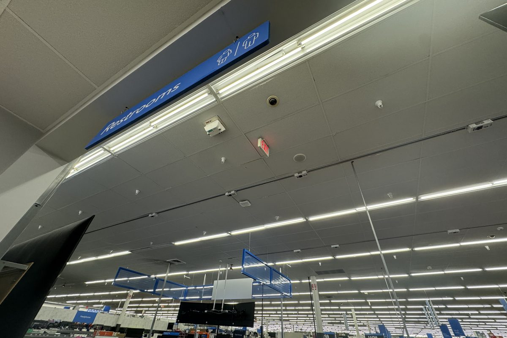
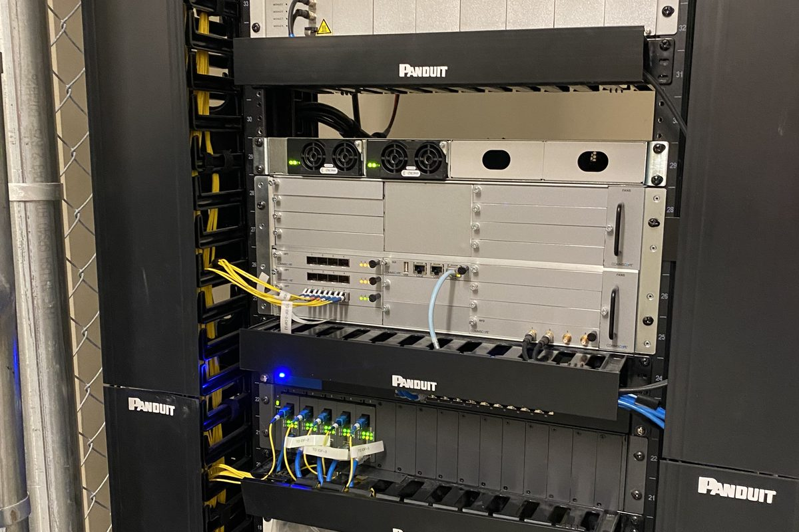
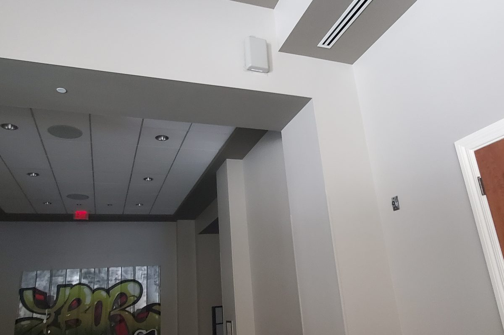
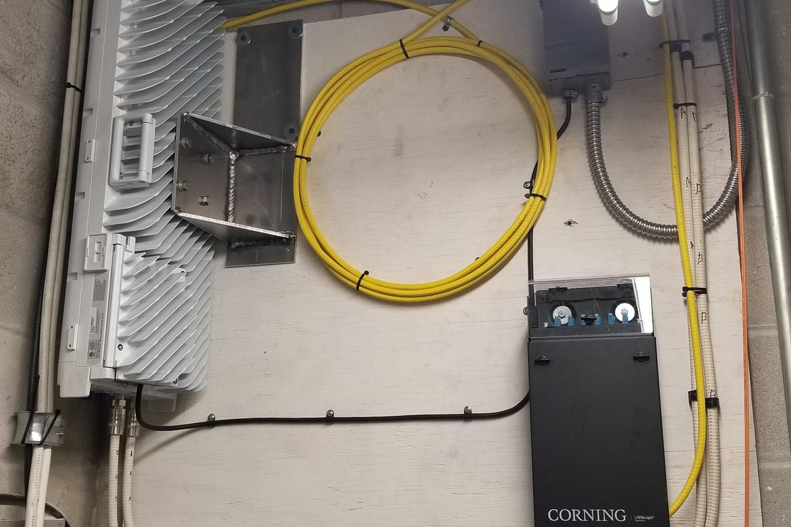
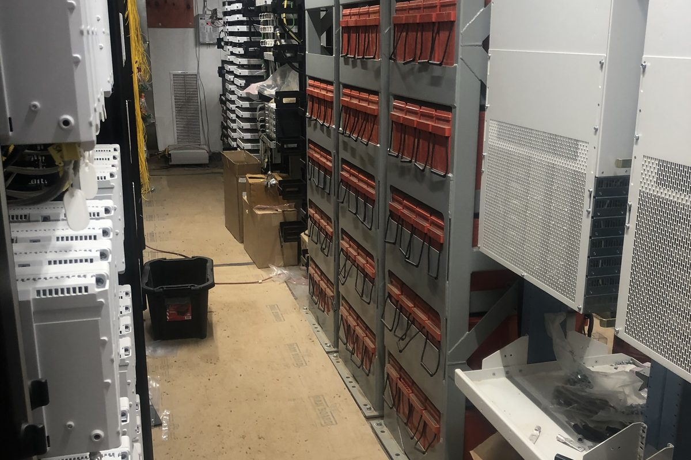
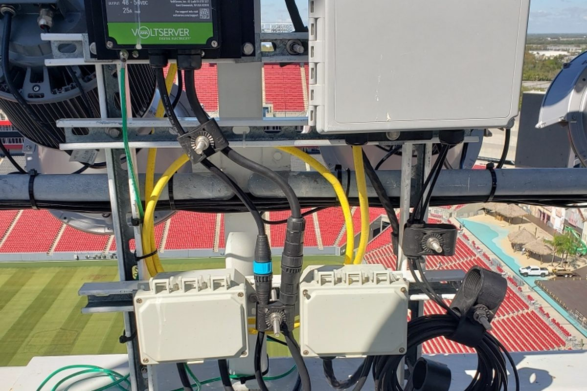
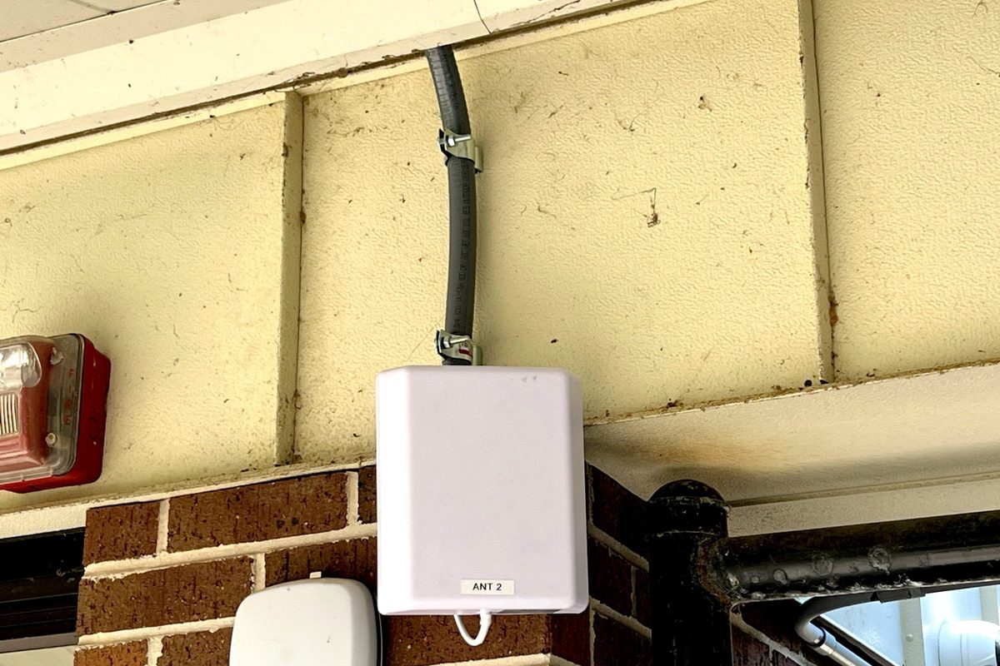
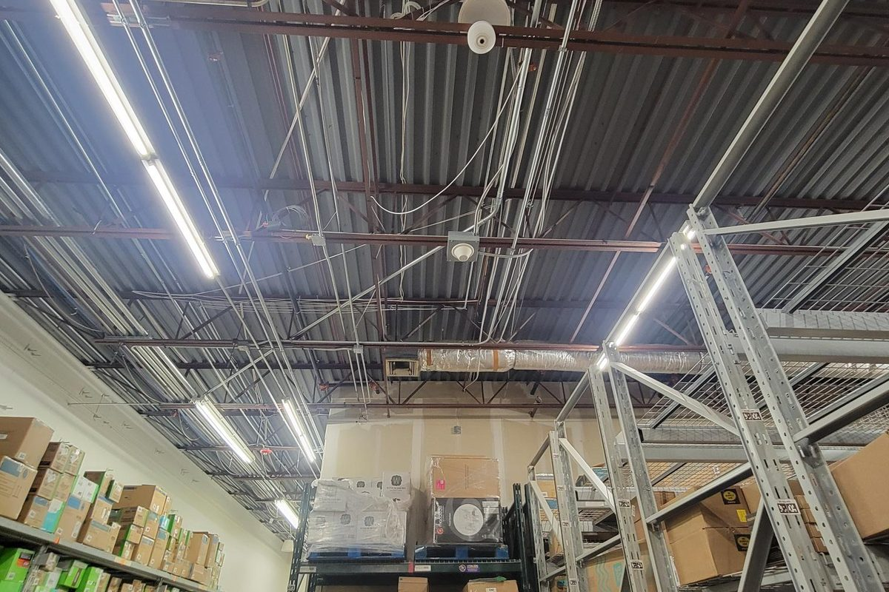
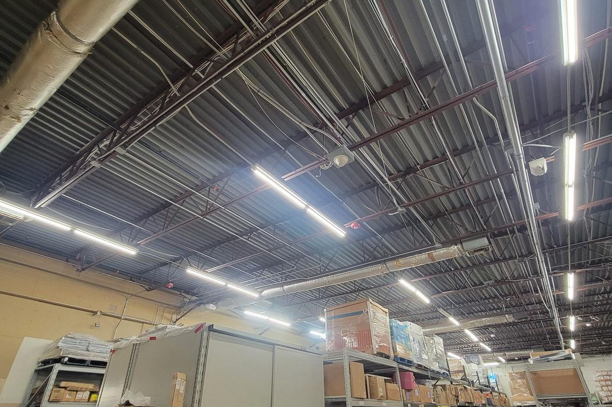
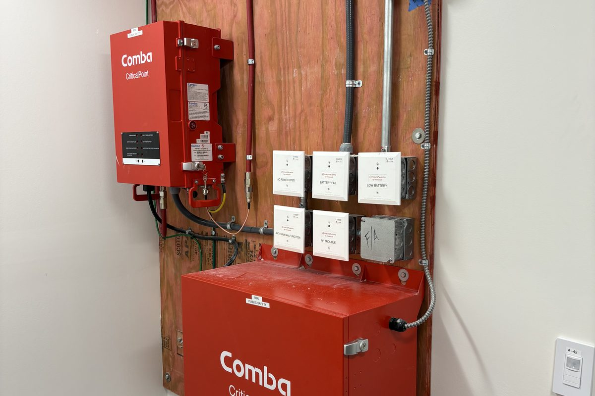

Proof in the field, not just on paper.
Big box retail floors. Hospital campuses. Stadium bowls. Convention halls. These are the environments where coverage has to work the first time — and where Cablelytics has spent more than two decades delivering.
Most contractors install equipment. We deliver a system you can operate.
Anyone can hang an antenna. The difference shows up eighteen months later — when a jurisdiction re-inspects, when racking gets reconfigured, when a new facilities manager inherits the building and needs to know what's actually installed. We build for that day.
Engineered, not estimated
We survey and RF-model the real building — actual materials, actual fixture and rack layout, actual peak occupancy. Coverage predictions get validated with field readings before we call a site complete, not after a complaint.
One accountable partner
DAS, public safety, wireless, fiber, structured cabling, and licensed electrical all come from one company. No gaps between trades, no schedule lost waiting on someone else's permit, no finger-pointing when something doesn't work.
Code and carrier handled
We coordinate with the authority having jurisdiction and with the carriers directly, and we own the acceptance testing. Our clients get systems that pass inspection — not a punch list and a second mobilization.
Closeout you can actually use
Labeled devices, drawing-matched as-builts, RF test results, and equipment records on every deployment. Facilities teams tell us this is the single biggest difference between us and the last contractor they hired.
We work around your operations
Overnight retail installs, phased hospital cutovers, summer-break school windows, event-calendar stadium work. The building keeps doing its job while we do ours.
Built to scale across sites
For multi-location clients we build a repeatable design and documentation standard, so site two is faster and cheaper than site one — and site forty looks exactly like site one when someone has to service it.
The site types we build for.
Different buildings fail in different ways. Here's what we deliver in each — and the value our clients tell us they didn't get from the last vendor.

Big Box Stores
Retail floors are one of the hardest RF environments there is — long open spans, metal shelving, refrigeration, and a customer count that swings by the hour. We survey the actual store, model coverage against the real fixture plan, and place antennas where they hold signal at the register, in the stockroom, and out on the receiving dock.
The difference customers notice is the schedule. We work overnight and around delivery windows, so the store never loses a selling hour. Every device gets labeled, mapped, and handed over in a closeout package your regional facilities team can actually use when they roll the design to the next location.
- Full-floor cellular, Wi-Fi, and scanner coverage — sales floor through receiving
- Off-hours and overnight installs so stores stay open and stocked
- Repeatable design package built for multi-site rollout, not one-off fixes
- As-built documentation, labeling, and RF test results on every location

Large Medical Centers
Hospitals punish sloppy RF design. Lead-lined imaging suites, thick concrete cores, and stairwells kill signal exactly where clinical staff and first responders need it most. We engineer in-building DAS and Public Safety DAS together so nurse call, staff phones, paging, and emergency radio all hold coverage in the same building.
Medical work also means working around the hospital, not through it. We phase installs wing by wing, keep infection-control and ICRA requirements front of mind, and never take a clinical system down without a tested cutover plan. When the AHJ shows up for acceptance testing, the survey grid, the readings, and the paperwork are already done.
- In-building DAS and Public Safety DAS engineered as one coordinated system
- Coverage verified through imaging suites, stairwells, and below-grade levels
- Phased, department-by-department cutovers with zero clinical downtime
- AHJ coordination and first-pass acceptance testing handled end to end

Major Hotels
A hotel can be finished, furnished, and staffed — and still not open, because the public safety radio system hasn't passed inspection. We design and commission ERRCS/Public Safety DAS to the code the local jurisdiction actually enforces, including the monitored battery backup, annunciator panel, and NEMA-rated enclosures inspectors look for first.
We build the guest-facing side at the same time. Cellular DAS and property-wide Wi-Fi go in on the same cable paths and the same schedule, which means one mobilization, one set of ceiling penetrations, and one team accountable for the result instead of three trades pointing at each other.
- Code-compliant ERRCS with monitored backup power and annunciation
- Guest cellular DAS and property Wi-Fi deployed on the same mobilization
- Coverage held through elevators, stairwells, garages, and back-of-house
- Inspection-ready documentation that clears certificate of occupancy on time

Large Convention Centers
A convention center goes from an empty concrete box to twenty thousand people with phones in their hands, and the network has to absorb that overnight. We design high-density DAS and fiber backbone for peak simultaneous load — not average load — because average is the number that makes a system look fine right up until show day.
Every tap, splitter, and run is labeled and documented against the floor plan, so when a show producer needs capacity moved to a different hall, your team can act on the drawings instead of tracing cable. That documentation is the part most contractors skip and the part operations teams tell us they value most.
- High-density DAS sized for peak show-floor concurrency, not averages
- Fiber backbone and distribution built for reconfigurable hall layouts
- Public safety coverage across exhibit halls, loading docks, and service corridors
- Fully labeled, drawing-matched as-builts your operations team can work from

Large Universities
Campuses are dozens of buildings of wildly different ages tied to one network, with hard calendar deadlines and no tolerance for a dorm being offline at move-in. We run inter-building fiber, refresh structured cabling, and extend DAS and wireless into the buildings that have always had dead spots — then tie it into one documented system instead of a patchwork.
Scheduling is the real deliverable. We plan around semesters, finals, and move-in weekends, and we sequence work so buildings come back online in the order the university actually needs them. Facilities teams get standardized labeling and closeout across every building, which makes the next phase cheaper than the last.
- Inter-building fiber backbone and campus-wide structured cabling
- DAS and wireless extended into older, hard-to-cover buildings
- Phased around academic calendars, finals, and move-in weekends
- Standardized labeling and closeout that carries forward to future phases

Large Professional Sports Stadiums
Stadium RF is a capacity problem before it's a coverage problem. Seventy thousand people in one bowl will saturate a system that tested clean on an empty Tuesday. We design sectorized DAS for peak-crowd density and verify it under load, so fans, point-of-sale, ticketing, and credentialing all keep working through the fourth quarter.
Underneath that, public safety communications have to reach every concourse, tunnel, and service level with backup power that's monitored and provable. We commission it, test it with the jurisdiction, and document it — because on event day, nobody has time to find out something was never verified.
- Sectorized, peak-load DAS design verified under real crowd density
- Public safety coverage through bowl, concourses, tunnels, and service levels
- Monitored backup power and annunciation to code
- Event-calendar scheduling with no impact to game or concert days

Large Schools
Schools get one real construction window a year, and it closes hard. We scope low-voltage cabling, wireless, DAS, and licensed electrical as a single package so there's no gap between trades, no waiting on another contractor's permit, and no unfinished ceiling on the first day of class.
Because we're a licensed Florida electrical contractor as well as a telecom integrator, the power side of every access point, camera, and equipment rack is ours too. That's one contract, one schedule, and one company answering for whether the building is ready.
- Low-voltage, wireless, DAS, and licensed electrical under one contract
- Scoped and sequenced to finish inside the summer break window
- Public safety radio coverage for first responders across all wings
- Single point of accountability — no gaps between trades or permits

Large Warehouses & Distribution Centers
Racking is a wall. Steel shelving stacked thirty feet high reflects and blocks signal in ways a ceiling-plan estimate will never predict, which is why so many warehouse networks fail in the aisles instead of the open floor. We model coverage against the actual rack layout and validate it at floor level, at pick height, and inside refrigerated zones.
The payoff is operational: scanners that don't drop mid-pick, forklift terminals that stay connected across the whole building, and safety radios that work in the far corner of the yard. We also design for change, because racking gets reconfigured and a system that only works in today's layout isn't much of an investment.
- RF modeled against real rack layout — validated at floor and pick height
- Coverage held through refrigerated, freezer, and high-bay zones
- Reliable scanner, forklift terminal, and safety radio connectivity
- Designed to tolerate rack reconfiguration without a redesign

Amusement Parks
Parks are outdoor, sprawling, and brutal on equipment. Coverage has to reach midways, queue lines, ride control buildings, and back-of-house at the same time, using outdoor-rated hardware that survives heat, rain, vibration, and lightning season without a truck roll every month.
We design for the crowd pattern, not just the acreage — density concentrates hard at gates, queues, and food service, and those are the spots where guest Wi-Fi, mobile ordering, and staff radios have to hold. Ride-adjacent and operations-critical communications get engineered with the redundancy that safety systems require.
- Outdoor-rated distributed coverage across midways, queues, and back-of-house
- Density-modeled for gates, queue lines, and food service concentration
- Hardened against weather, vibration, and lightning exposure
- Redundancy engineered for ride-adjacent and operations-critical systems

Fire Stations & Emergency Facilities
When the building is the emergency response, communications don't get to fail. We build hardened infrastructure for fire stations and emergency facilities — alerting and station dispatch systems, radio coverage inside apparatus bays and living quarters, and backup power that's monitored rather than assumed.
These projects are graded on redundancy and documentation. We test the failure paths, prove the backup, and hand over records that stand up to inspection and to the next crew that has to work on the system at two in the morning.
- Station alerting, dispatch, and radio coverage through apparatus bays
- Monitored backup power with tested, documented failover
- Hardened cabling and equipment rooms built for continuous operation
- Inspection-grade documentation and clear labeling for future service
Dealerships
A dealership is three buildings pretending to be one: a showroom that needs clean guest Wi-Fi, service bays full of steel and lifts that kill signal, and an outdoor lot where inventory has to be scanned and located. Most networks cover the showroom well and fall apart everywhere revenue actually happens.
We cover all three on one documented system — sales tablets, service tickets, parts scanning, and lot inventory on the same reliable backbone, with the cameras and access control tied in and powered by our own licensed electrical crew.
- Showroom, service bay, and full lot coverage on one system
- Signal engineered to hold through lifts, steel, and bay doors
- Camera, access control, and low-voltage integration included
- Licensed electrical in-house — no waiting on a second contractor
Your project could be the next success story.
Tell us what you're building — we'll walk the site and scope it properly.
Book a Meeting